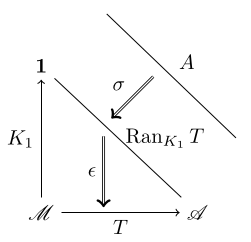
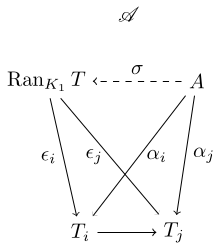
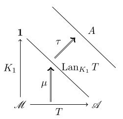
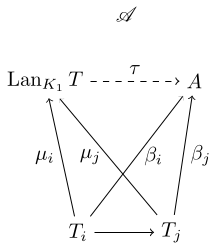

射は，圏という世界における関係を表す矢印であり，． 圏論において対象は矢印の始まりと終わりにつけられる名称に過ぎず， 対象のもつ性質は射によってのみ特徴づけられる．
定義 1.1 (圏). 圏 (category) は，対象 (object) と射 (arrow, morphism) の集まりからなり， 以下を満たす．
任意の射は，域 (domain) と余域 (codomain) と呼ばれる対象をもつ． 射 \(f\) の域を\(\mathop{\mathrm{dom}}(f)\)，余域を \(\mathop{\mathrm{cod}}(f)\) と表記する． また，\(\mathop{\mathrm{dom}}(f)=A\)，\(\mathop{\mathrm{cod}}(f)=B\) であるとき \(f:A\to B\) と表記する．
任意の射 \(f,g\) について，\(\mathop{\mathrm{cod}}(f)=\mathop{\mathrm{dom}}(g)\) ならば， \(f,g\) の合成 (composition) \(g\circ f\) が一意に存在する．
任意の射 \(f,g,h\) について， \(\mathop{\mathrm{cod}}(f)=\mathop{\mathrm{dom}}(g)\) かつ \(\mathop{\mathrm{cod}}(g)=\mathop{\mathrm{dom}}(h)\) ならば， \(h\circ(g\circ f)=(h\circ g)\circ f\) が成り立つ．
任意の対象 \(A\) について恒等射 (identity) \(\mathrm{id}_{A}:A\to A\) が一意に存在し， 任意の射 \(f:A\to B\) について \(f\circ \mathrm{id}_{A}=\mathrm{id}_{B}\circ f=f\) が成り立つ．
また，圏 \(\mathscr{C}\) の対象の集まりを \(|\mathscr{C}|\)， 射 \(A\to B\) の集まりを \(\mathscr{C}(A,B)\) と表記する．
対象は性質をもたないため， 対象どうしの「本質的な等しさ」なるものも射によって定められる．
定義 1.2 (同型). 圏 \(\mathscr{C}\) の対象 \(A,B\) について \[\exists f\in\mathscr{C}(A,B); \ \exists g\in\mathscr{C}(B,A); \ g\circ f=\mathrm{id}_{A}\wedge f\circ g=\mathrm{id}_{B}\] が成り立つとき， \(A\) と \(B\) は同型 (isomorphic) であるといい，\(A\simeq B\) と表記する．
前述のとおり，圏論では対象そのものが既に何らかの性質を備えているとは考えない． むしろ対象の「性質」とは他の対象との関係性によって初めて問題にできるものだ．
素朴な集合論においては， まず集合が要素をもち，それらの対応づけとして集合間の写像が定義される． 圏論はその逆をいく．「集合」という何かの間に写像を定めてしまい， それによって初めて集合の要素を定義する．
定義 1.3 (集合圏). 集合圏は，任意の集合を対象とし，それらの間の任意の写像を射とする圏である．
2つの世界 (圏) を比較したときに，世界を構成する要素は全く違っていても， それらの関係性に着目するとなんとなく似ている気がしてくることがある． 関手はそのようなアナロジーを表現する矢印である．
定義 1.4 (関手). 2つの圏 \(\mathscr{C},\mathscr{D}\) の対象から対象へ，射から射へ対応づける写像 \(F:\mathscr{C}\to\mathscr{D}\) が以下の条件を満たすとき， \(F\) を関手 (functor) という．
\(F(A\to B)=F(A)\to F(B)\),
\(F(\mathrm{id}_{A})=\mathrm{id}_{F(A)}\),
\(F(g\circ f)=F(g)\circ F(f)\).
すなわち関手は域と余域，恒等射と射の合成を保存する写像である． のちに「圏の圏」なるものを考えるが， そこでは圏が対象として，関手が射として扱われることになる (これが1.1を満たすことは容易に確認できる)．
2つの世界 (圏) について異なるアナロジーを考えることもできる． すると，異なるアナロジーの間にも何らかのアナロジーが見えてくることがある． この高次のアナロジーが自然変換である．
定義 1.5 (自然変換). 2つの関手 \(F:\mathscr{C}\to\mathscr{D},G:\mathscr{C}\to\mathscr{D}\) について， \(\mathscr{C}\) の対象 \(X\) を \(\mathscr{D}\) の射 \(t_X:F(X)\to G(X)\) に対応づける 写像 \(t\) が \[\forall X,Y\ \forall f:X\to Y\ G(f)\circ t_X=t_Y\circ F(f)\] を満たすとき，\(t\) を自然変換 (natural transformation) といい， \(t:F\Rightarrow G\) と表記する．
All Concepts are Kan Extensions.
Saunders Mac Lane
本節では，極限や随伴がカン拡張として表現されることを確認する．
定理 2.1 (極限は右カン拡張である). 関手 \(T:\mathscr{M}\to\mathscr{A}\) について以下の2つは同値である:
\(T\) が極限をもつ，
\(T\) が (一意的な) 関手 \(K_1:\mathscr{M}\to\mathbf{1}\) に沿った右カン拡張をもつ．
またこれらが成り立つとき \(\lim T\simeq\mathop{\mathrm{Ran}}_{K_1}T\)．
Proof. 関手 \(A:\mathbf{1}\to\mathscr{A}\) は \(\mathscr{A}\) の対象であり， \(A\circ K_1=\Delta(A)\) である． よって自然変換 \(\alpha:A\circ K_1\to T\) は \(T\) への錐 \((A,\alpha)\) をなす． 右カン拡張 \((\mathop{\mathrm{Ran}}_{K_1}T,\epsilon)\) も同様に \(T\) への錐であり， その定義より極限錐に同型である． ◻


定理 2.2 (余極限は左カン拡張である). 関手 \(T:\mathscr{M}\to\mathscr{A}\) について以下の2つは同値である:
\(T\) が余極限をもつ，
\(T\) が (一意的な) 関手 \(K_1:\mathscr{M}\to\mathbf{1}\) に沿った左カン拡張をもつ．
またこれらが成り立つとき \(\mathop{\mathrm{Colim}}T\simeq\mathop{\mathrm{Lan}}_{K_1}T\)．
Proof. 2.1 より双対的に示される． ◻

